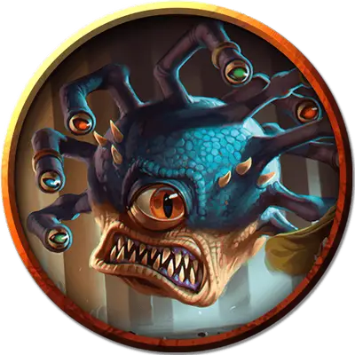

Занатар
Xanathar
Большая Аберрация, законно-злая, именной НИП

Класс Доспеха 18 (природный доспех)
Хиты 180 (19к10 + 76)
Скорость 0 футов, летая 20 футов (парит)
| мод | спас | ||
|---|---|---|---|
| СИЛ | 10 | +0 | +0 |
| ЛОВ | 14 | +2 | +2 |
| ТЕЛ | 18 | +4 | +4 |
| мод | спас | ||
|---|---|---|---|
| ИНТ | 17 | +3 | +8 |
| МДР | 15 | +2 | +7 |
| ХАР | 17 | +3 | +8 |
Навыки Восприятие +12
Иммунитет к состояниям сбивание с ног
Чувства тёмное зрение 120 футов, пассивное Восприятие 22
Языки Глубинная речь, Подземный
Опасность 13 (10000 опыта)
Бонус мастерства +5
Особенности
Особое снаряжение. Занатар носит магические кольца на трёх стебельках глаз. Он настроен на все три кольца и носит кольцо невидимости на стебельке, стреляющем лучом страха, кольцо защиты разума на стебельке, стреляющем усыпляющим лучом, и кольцо сопротивления (силовое поле) на стебельке, стреляющем замедляющим лучом.
Конус антимагии. Центральный глаз Занатара создает 150-футовым конусом зону антимагии, как заклинание преграда магии. В начале каждого своего хода Занатар решает, в какую сторону направлен конус, и будет ли он активен. Эта зона работает и против лучей из глаз самого Занатара.
Действия
Укус. Рукопашная атака оружием: +5 к попаданию, досягаемость 5 футов, одна цель. Попадание: Колющий урон 14 (4к6).
Лучи из глаз. Занатар испускает три магических луча из глаз, выбранных случайным образом (перебрасывая повторяющиеся результаты), выбирая от одной до трех целей, видимых в пределах 120 футов:
• Очаровывающий луч. Целевое существо должно преуспеть в спасброске Мудрости Сл 16, иначе станет очарованным Занатаром на 1 час, или пока Занатар не причинит ему вред.
• Парализующий луч. Целевое существо должно преуспеть в спасброске Телосложения Сл 16, иначе станет парализованным на 1 минуту. Цель может повторять этот спасбросок в конце каждого своего хода, оканчивая эффект на себе при успехе.
• Луч страха. Целевое существо должно преуспеть в спасброске Мудрости Сл 16, иначе станет испуганным на 1 минуту. Цель может повторять этот спасбросок в конце каждого своего хода, оканчивая эффект на себе при успехе.
• Замедляющий луч. Целевое существо должно преуспеть в спасброске Ловкости Сл 16. При провале скорость цели на 1 минуту уменьшается вдвое. Кроме того, существо не может совершать реакции, и может в свой ход совершать либо действие, либо бонусное действие, но не то и другое. Существо может повторять этот спасбросок в конце каждого своего хода, оканчивая эффект на себе при успехе.
• Луч бессилия. Целевое существо должно совершить спасбросок Телосложения Сл 16, получая урон некротической энергией 36 (8к8) при провале, или половину этого урона при успехе.
• Телекинетический луч. Если цель — существо, она должна преуспеть в спасброске Силы Сл 16, иначе Занатар переместит её на расстояние до 30 футов в любом направлении. Цель опутана телекинетической хваткой луча до начала следующего хода Занатара, либо пока Занатар не станет недееспособным. Если цель — предмет, весящий не больше 300 фунтов, никем не несомый и не носимый, он перемещается в любом направлении на расстояние до 30 футов. Занатар может этим лучом совершать аккуратные действия, например, манипулировать простым инструментом, открывать дверь или контейнеры.
• Усыпляющий луч. Целевое существо должно преуспеть в спасброске Мудрости Сл 16, иначе уснет и в течение 1 минуты будет лишено сознания. Цель просыпается, если получает урон или другое существо действием разбудит его. Этот луч не оказывает никакого эффекта на конструктов и нежить.
• Луч окаменения. Целевое существо должно совершить спасбросок Ловкости Сл 16. При провале существо начинает превращаться в камень и становится опутанным. В конце своего следующего хода оно должно повторить этот спасбросок. При успехе эффект оканчивается. При провале существо становится окаменевшим, пока не будет использовано заклинание высшее восстановление или подобная магия.
• Луч расщепления. Если цель — существо, она должна преуспеть в спасброске Ловкости Сл 16, иначе получит урон силовым полем 45 (10к8). Если этот урон снижает хиты существа до 0, его тело становится кучкой серой пыли. Если цель — немагический предмет или творение магической силы с размером не больше Большого, она расщепляется без спасброска. Если цель — немагический предмет или творение магической силы с размером Огромный или больше, этот луч расщепляет объём куба с длиной ребра 10 футов.
• Луч смерти. Целевое существо должно преуспеть в спасброске Ловкости Сл 16, иначе получит урон некротической энергией 55 (10к10). Цель умирает, если луч уменьшает её хиты до 0.
Легендарные действия
Занатар может совершить 3 легендарных действия, используя описанный ниже Луч из глаз. За один раз можно использовать только одно легендарное действие, и только в конце хода другого существа. Занатар восстанавливает использованные легендарные действия в начале своего хода.
Луч из глаз. Занатар использует один случайным образом выбранный луч из глаз.
Логово
Центр логова Занатара - это, как правило, просторная пещера с высокими потолками, где он может атаковать, не рискуя столкнуться в ближнем бою с врагом. У бехолдера, обнаруженного в логове, показатель опасности 14 (11500 опыта).
Действия логова
При сражении в своем логове, бехолдер может воззвать к окружающей магии и использовать действие логова. При значении инициативы «20» (в случае ничьей проигрывает всем конкурентам) бехолдер может совершить действие логова, чтобы вызвать один из следующих эффектов:
• Квадратная площадь 50 × 50 футов, находящаяся в пределах 120 футов от бехолдера, становится вязкой; это зона — труднопроходимая местность, до значения инициативы 20 в следующем раунде.
• Стены в пределах 120 футов от бехолдера обрастают хватательными придатками до значения инициативы 20 через два раунда. Все существа по выбору бехолдера, начинающие свой ход в пределах 10 футов от такой стены, должно преуспеть в спасброске Ловкости Сл 15, или будут схвачены. Для высвобождения необходима успешная проверка Силы (Атлетика) или Ловкости (Акробатика) Сл 15.
• На твердой поверхности в пределах 60 футов от бехолдера открывается глаз, испускающий случайным образом выбранный луч из глаз этого бехолдера в цель, видимую бехолдером на его выбор. После этого глаз закрывается и исчезает.
Бехолдер не может повторять эффект, пока все эффекты не будут использованы, и он не может использовать один эффект два раунда подряд.
Местные эффекты
Местность, в которой находится логово бехолдера, искажается сверхъестественной природой существа. Обычно это один или несколько из следующих эффектов:
• Существа в пределах 1 мили от логова бехолдера иногда ощущают, что за ними наблюдают, хотя рядом никого нет.
• Когда бехолдер спит, в пределах 1 мили от его логова происходят незначительные искажения, исчезающие через 24 часа. Отметки на стенах пещер могут едва заметно измениться, мрачные безделушки могут появиться там, где их не было, безобидная слизь может покрыть статую, и так далее. Эти эффекты применяются только к естественным поверхностям и немагическим объектам, которые ни на кого не надеты.
Если бехолдер умирает, эти эффекты пропадают в течение 1к10 дней.
Описание
Имя Занатара носит бехолдер-мафиози, живущий в подземельях Глубоководья. Он не первый, кто присвоил это имя, и вряд ли будет последним.
Как и все бехолдеры, Занатар — параноидальный тиран, который подчиняет приспешников магией и запугиванием. В гильдии Занатара состоят последние отбросы Глубоководья, а также чудовища, которых бехолдер подчинил или привлёк посулами сокровищ, пищи или власти. Интриги и предательства — обычное дело в гильдии, члены которой борются за внимание и расположение бехолдера. Но положение фаворитов ненадёжно: бехолдер быстро теряет веру в тех, кто добился его милости.
Занатар живёт в подземелье под Скалпортом — подземным поселением, связанным с третьим уровнем Подгорья. Это место похоже на полуразрушенный город, построенный в гигантской пещере, где протекает подземная река. Члены гильдии заселили полуобвалившиеся здания Скалпорта, а улицы патрулируют огненные черепа.
Единственное существо, о котором Занатар и правда заботится, помимо себя, — его рыбка по имени Силгар, живущая в огромном аквариуме. Занатар заставляет приспешников ухаживать за рыбкой, но все их усилия не могут сделать рыбку бессмертной. Каждый раз, когда рыбка дохнет, в логове начинается паника, и приспешники спешат заменить её, прежде чем Занатар заметит потерю. К счастью для них, бехолдер не отличает рыбок друг от друга.
Ещё Занатар обожает золото. Несколько лет назад его лазутчики стащили Камень Голорра, поведавший им сведения, которые помогли найти дварфийское хранилище под Глубоководьем. Занатар сумел открыть хранилище, но обитавший внутри дракон прогнал его. Недавно кто-то украл Камень Голорра из тайника в логове Занатара, и бехолдер решил, что это проделки Чёрной Сети.
Бехолдер охвачен неизлечимой манией преследования. Ему всюду мерещатся враги, и он обрушивает свой гнев на любого, кого примет за лазутчика или убийцу из Жентарим. Если искатели приключений привлекут его внимание, сотрудничая с теми, кого он считает (справедливо или нет) членами Чёрной Сети, он немедленно объявляет героев врагами, которых надо уничтожить.